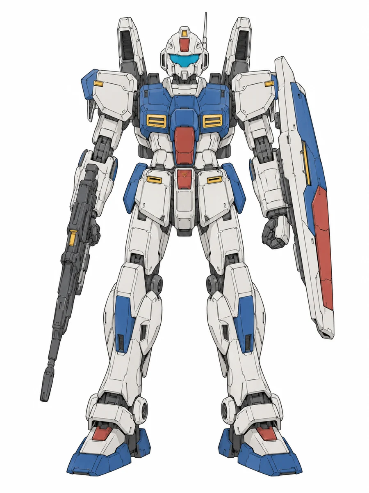
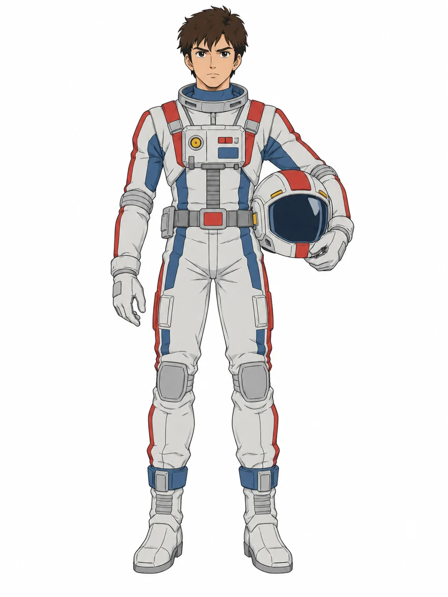

Ações na cabine
戦闘Escala do oponente
Piloto e mobile suit para Fate Core パイロット・モビルスーツ
Marque NT no aspecto que faz do personagem um Newtype. Só um por ficha; ele libera as façanhas Newtype e as armas psicomu.

Escolha a linha da avaria e toque no corpo. Avaria moderada ou severa zera o sistema daquele local até o reparo.
1O Fate trata qualquer coisa importante como personagem (a Regra de Bronze). O mobile suit ganha aspectos, perícias próprias chamadas Sistemas, façanhas, estresse e consequências chamadas Avarias.
2A máquina não tem Recarga nem Pontos de Destino. Quem decide, invoca e gasta é o piloto. O mestre força os aspectos da máquina como os de qualquer personagem.
3Piloto: cinco aspectos (Conceito, Problema e três livres); pirâmide de uma perícia +4, duas +3, três +2, quatro +1; três façanhas grátis e Recarga 3. Estresse com duas caixas; Vigor e Vontade +1 ou +2 abrem a terceira, +3 ou +4 abrem a quarta. A ficha calcula tudo isso.

| Perícia do piloto | Sistema que soma | Usos |
|---|---|---|
| Pilotagem | Mobilidade | Defender, mover, perseguir, fugir |
| Atirar | Mira | Armas de disparo |
| Lutar | Combate | Sabre, machado, corpo a corpo |
| Percepção | Sensores | Detectar e ordem de turno |
| Vontade | Mira | Bits e funnels (aspecto NT + Psicomunicador) |
| Empatia | Mobilidade | Só com a façanha Flash Newtype, para defender |
Na ficha, fechar a escotilha abre o modo de combate: cada ação já aparece com a soma pronta, e um toque rola.
Pilotagem substitui Condução e cobre tudo que tem comando: carro, Core Fighter, nave e mobile suit. Mirai Yashima conduz a White Base com a mesma perícia que Amuro usa no Gundam.
| Perícia | Ação | Efeito |
|---|---|---|
| Vigor | Manobra extrema (criar vantagem) | Posição que ninguém aguentaria. Falhou: estresse físico igual à diferença, pela força G. |
| Conhecimentos | Ler o inimigo (criar vantagem) | Revela ou cria um aspecto do MS inimigo (Junta do joelho exposta). |
| Comunicação | Ordem pelo rádio (criar vantagem) | A invocação grátis vai para um aliado. |
| Ofícios | Remendo na cabine (superar) | Gasta a ação; contra Ótimo (+4), restaura funcionamento até o fim da cena, sem apagar a avaria. |
Lista de perícias: Atirar, Atletismo, Comunicação, Conhecimentos, Contatos, Empatia, Enganar, Furtividade, Investigação, Lutar, Ofícios, Percepção, Pilotagem, Provocar, Recursos, Roubo, Vigor, Vontade. Atletismo não funciona dentro da máquina.
1Encaixes. Todo piloto tem três encaixes de façanha grátis. Cada façanha além do terceiro custa 1 de Recarga, com mínimo 1.
2Trocar encaixes por Recarga (regra opcional da mesa). Cada encaixe grátis que fica vazio vira +1 de Recarga: sem nenhuma façanha, a Recarga vai a 6. Serve para quem prefere viver de aspectos e pontos de destino.
3Escrever uma façanha. O livro dá três moldes. O Criador de façanha da ficha monta a frase e confere cada regra enquanto você escolhe.
| Molde | Frase | Cuidado |
|---|---|---|
| Bônus de +2 | Porque eu…, recebo +2 em [perícia] para [ação] quando [circunstância]. | Uma perícia, uma ação, circunstância estreita. |
| Nova ação | Porque eu…, posso usar [perícia] para [ação] quando [circunstância]. | A perícia não pode já fazer essa ação. |
| Exceção à regra | Porque eu…, uma vez por [cena ou sessão], [efeito]. | Efeito forte pede limite de uso; sem limite, fica do tamanho de +2. |
1Permissão. Só quem tem um aspecto marcado NT compra façanhas Newtype e opera armas psicomu. Um por ficha, em qualquer posição, inclusive no Problema.
2Custo. As façanhas Newtype saem das três grátis ou da Recarga. O espaço de aspecto é o preço de entrada. Sugestão: um ou dois Newtypes por grupo.
3Forçar. Sentir alguém morrer e perder a troca; um laboratório (Instituto Flanagan, Laboratório Murasame) atrás de você; outro Newtype te achando escondido; superiores te usando como arma.
4Ressonância. Dois Newtypes na mesma cena podem invocar o aspecto NT um do outro. Entre eles não há emboscada.
5Newtype artificial. Aspecto que deixa claro a origem de laboratório. Uma vez por sessão o mestre força esse aspecto e o jogador não pode recusar; ainda recebe o ponto.
Toda máquina de jogador tem o mesmo orçamento: 5 pontos de sistema, máximo +2 em cada, duas façanhas de sistema. A classe muda a escala e dá uma vantagem com custo.
| Classe | Exemplos | Escala | O que muda |
|---|
Conceito: o que é e para quem foi feita. Defeito: o que trai a máquina na hora errada. Marca: história, pintura, quem pilotou antes.
Arma:1 para vulcan e metralhadora; Arma:2 para rifle de feixe, sabre, bazuca e mega partícula. A diferença de tamanho vem da escala, não do número da arma.
1Estrutura define as caixas: +0 dá duas, +1 dá três, +2 dá quatro.
2Avaria tem local. Cada tipo de máquina tem o próprio corpo, desenhado acima. Avaria moderada ou severa zera o sistema daquele local até o reparo. No mobile suit, cabeça tira Sensores, braço direito tira Mira, braço esquerdo tira Combate, pernas e propulsores tiram Mobilidade. Na mobile armor, sensor, canhões e propulsores. Na nave, ponte tira Sensores, torres tiram Mira, motores tiram Mobilidade; hangar e casco não derrubam sistema, mas uma avaria no hangar vira o aspecto que impede lançar ou recolher MS. Avaria suave é só aspecto.
3O piloto só marca estresse físico quando o atacante cria antes a vantagem Cabine exposta, ou quando a máquina é tirada de ação.
4Ejetar é conceder. Ganha 1 ponto de destino mais 1 por avaria da máquina. A campanha ganha o aspecto Sem máquina até alguém conseguir outra: uma cena de Recursos ou de Contatos, contra Ótimo (+4) para produção em massa e Fantástico (+6) para o resto.
| Avaria | Reparo com Ofícios | Some depois de |
|---|---|---|
| Suave (2) | Razoável (+2) | uma cena |
| Moderada (4) | Ótimo (+4) | uma sessão |
| Severa (6) | Fantástico (+6) | um cenário |
A nave é outro personagem, montado com a mesma ficha de máquina na classe Nave de guerra (escala 3). Quem não pilota faz a ficha dele normalmente e escolhe a nave na coluna da máquina; o modo de combate mostra as mesmas ações, agora somando os sistemas da nave.
| Posto | Rolagem | Na batalha |
|---|---|---|
| Comando | Comunicação | Ordem: cria vantagem cuja invocação grátis vai para um piloto |
| Operação | Percepção + Sensores | Acha o inimigo e passa a posição como aspecto |
| Timão | Pilotagem + Mobilidade | Move e defende a nave |
| Artilharia | Atirar + Mira | Canhões da nave |
| Mecânica | Ofícios | Repara avarias de um MS que volta ao hangar no meio da luta |
| Escala | O que entra |
|---|---|
| 0 | Pessoa a pé |
| 1 | Veículo: tanque, Core Fighter, mobile pod (Ball) |
| 2 | Mobile suit |
| 3 | Mobile armor e nave de guerra |
Por degrau de diferença, o maior soma +1 ao atacar e ao defender contra o menor, e cada acerto dele causa +2 tensões por degrau. O menor sobrevive criando vantagem. No modo de combate, escolha a escala do oponente e a ficha soma sozinha.
Partículas Minovsky densas é aspecto de cena na maioria das batalhas. Com ele ativo, Sensores só somam na mesma zona ou na adjacente, e rádio entre zonas distantes exige criar vantagem antes (laser, sinalizador). Ressonância ignora o limite para notar pessoas.
| Valor | Nome | Valor | Nome |
|---|---|---|---|
| +8 | Lendário | +2 | Razoável |
| +7 | Épico | +1 | Regular |
| +6 | Fantástico | +0 | Medíocre |
| +5 | Excepcional | −1 | Ruim |
| +4 | Ótimo | −2 | Terrível |
| +3 | Bom |